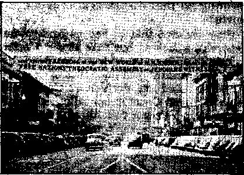
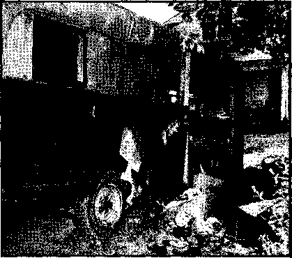
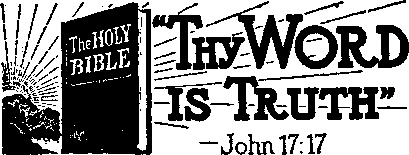

City Officials Stab Freedom in the Back 3
American Faseisti and Weak-kneed Council 4
Columbia’s “Southern Hospitality”
1 Bristol, Tenn., Deserts “Four Freedoms”
* Police Delinquency Rivals Juvenile
Officials Brand Freedom “Wrong Side”
Shreveport, La., the Worst for Last ■
“Appeasement” Advocated on Home Front 13 The Position of Jehovah’s witnesses
Thanks for the Kind Words, Kyra
“Thy Word Is Truth”
The Humiliation of “Father” Shea
Presenting “This Gospel of the Kingdom”
Published every other Wednesday by WATCHTOWER BIBLE AND TRACT SOCIETY, INC, 117 Adams St., Brooklyn 1, N. Y., U. S. A,
OFFICERS
President N. H. Knorr
Secretary W. E. Van Arnbur^h
Editor Clayton J. Woodworth
Five Cents a Copy 51 a year in the United States $1.25 to Canada and all other countries
NOTICE TO SUBSCRIBERS
Remittances: For your own safety, remit by postal or express money order. When coin or currency Is lost in the ordinary mails, there is no redress. Remittances from countries other than those nami'd below may be made to the Brooklyn office, but only by International postal money order.
Receipt of a new or renewal subscription will be acknowledged only when requested. Notice of Expiration is sent with, the journal one month before subscription expires. Please renew promptly to avoid loss of copiefl. Send change of address direct to us rather than to the post office. Your request should reach us at least two weeks before the date of issue with which it is tn take effect. Scud your old as well as the new address. Copies will not be forwarded by the post office to your new address unless extra postage is provided by you.
Published also In Greek, Portuguese, Spanish, and Ukrainian.
OFFICES FOR OTHER COUNTRIES
England 34 Craven Terrace, London, W, 2
Australia 7 Beresford Road. Strathfield, N. 8. XV.
South Africa 623 Boston House, Cape Town
Mexico Calzada de Melchor Ocampo 71, Mexico, D. F, Brazil Caixa Postal 1319, Rio de Janeiro
Argentina Calle Honduras 5646-48, Buenos Aires
Entered aa second-class matter at Brooklyn, N. Y«, under the Act of March 3, 1879.
’ ! 'r'£f
2,000 Uses for Plastics
♦ Of the 13 types of plastics on the market (celluloid, bakelite, micarta, plaskon and Incite are some of the trade names) there are now some 2,000 modifications available for manufacturing. Pumps formerly made of metal parts are now made entirely of plastics, Gunstocks made of it are stronger, made in less time, and cost less. The average automobile uses about 20 pounds of plastics. .Dishes and electric-lamp reflectors made of it are unbreakable.
Witnessing a Fight by Television
♦ A select audience of 1,200 witnessed by television a fight that took place in Madison Square Garden four blocks away. They heard every blow, every boo or cheer, and had a much better view of the fight than most of’Those that were at the Garden. The screen was 15 feet by 20 feet, with some but not serious distortion of the pictures at the edge of the screen. Television has at last arrived.
Inspecting Grain by Electric Eye
♦ The electric eye, thousands of times quicker and more accurate than the human eye, is now used to determine the food value of grains. A small portion of the grain is ground, and treated chemically, and when the beams of the electric eye are played upon the residue a nearly automatic photometer indicates the protein content of the grain.
Peptic Ulcers and the War
♦ Physicians in convention at Atlantic City took note of the fact that peptic ulcers are the chief cause of medical military disability in the present war. The reason for the ulcers is well known to the readers of this magazine. All you have to do to get the ulcers is to always cook your food in aluminum utensils.
“And in His name shall the nations hope.”—Matthew 12:21, A.R.V.
Volume XXV Brooklyn, N. Y., Wednesday, October 13, 1943 dumber 629
FOR four long years nations championing freedom have been locked in battle with ruthless dictators who would choke out all human liberties and stifle the individual’s conscience. The raging fires of this conflict, started in continental Europe, have spread to the remote corners of the earth, and all nations feel the heat of battle. The United States has thrown its weight into the global war in the endeavor to push back the frgpdom-destroying totalitarians and insure lasting liberty for its citizens. With the cry of “Unconditional surrender” on its lips the nation resolutely faces its enemies across the seas in “all out” warfare for freedom. And, while they are so occupied, what happens? Honie-frenters seize this crucial time to give freedom a vicious “stab in the back”! Not just ordinary citizens, mind you, but city officials entrusted with the solemn charge of safeguarding constitutional liberties are the perpetrators of this sneak attack on beleaguered freedom.
Four cities, namely, Barre, Vt., Columbia, S.C., Bristol, Tenn., and Shreveport, La., were the scenes of the onslaughts. In these cities mobs intimidated city officials to break contracts for halls rented for Christian assemblies; great property damage was wrought by the mobsters, and physical injury inflicted upon American citizens, these lawless acts done under the approving gaze of city officials; and even city- officials themselves spearheaded the drive against democratic freedoms and blazed the way for the an-
OCTOBER 13, 1343 archists. Sawed-off shotguns were brandished in the faces of men and women and children, and revolver shots rang out to break up Bible meetings; threats to put private homes to the torch, harking back to the horrible witch-burnings of the Inquisition, were made by the demon-controlled mobocrats.
What was the target of these un-American assaults? A nation-wide assembly of Christian people, the keynote theme of which assembly was freedom. The name of this 100-city convention was “ ‘Free Nation’s’ Theocratic Assembly”. All of the discourses of that assembly of three days, August 20,,21, and 22, advocated freedom for the people and the need of standing fast for it. Especially stressed was the most vital of the “four freedoms”, the freedom to worship God according to the dictates of one’s conscience, l ienee this assembly was to the welfare of all persons and all nations favoring freedom. Why, then, was it opposed so violently and lawlessly by self-proclaimed patriots? In the name of “freedom” these blind, misguided pseudo-patriots attempted to destroy the greatest freedom of all, the right of the creature to worship his Creator. In four of the hundred convention cities the officials and rabble element of the communities disgraced their respective cities and, though too deluded and shortsighted to appreciate the fact, struck a blow for tyranny and against the nation’s war aims. Let the facts testify to the truthfulness of this.
3
barre; vt.
A City in Disgrace
On June 9 the city of Barre, through its duly authorized agent, contracted with Jehovah’s witnesses for the use of the Municipal Auditorium on the days of * August 20-22. In course of time the ad-* vertising of the scheduled Bible meetings began, the lecture announced being "Freedom in the New World”. Who aside from the Axis Powers or those of like stripe would object to a discussion of a new world of freedom ? As the advocates of freedom extended invitations to the lecture to the residents of Barre and . vicinity, the ire of freedom-haters was deeply stirred. In un-American style they threatened boycott against stores that displayed announcements of the freedom lecture, and otherwise employed coercion and pressure methods. The city rowdies ripped signs from the persons of witnesses advertising on the streets, and tore banners from private cars. They made special effort to incite others to commit unlawful assaults against Christians and prophesied dire consequences if the meeting were held in Barre. The fast-moving events reached a climax on the evening of August 17.
The American Fascisti
and Weak-kneed City Council
The facts testify that the organization known as The American Legion either is against the democratic form of government or has no conception of what "democracy” means. A former national commander publicly declared: "Do not forget that the Fascisti are to Italy what the American Legion is to the United States" May America be spared "salvation” similar to that accorded Italy by the Fascisti! Barre Post No. 10, alas for that city, seems bent on being “saviors”. They adopted and caused to be published a resolution placing them on record as opposing freedom of worship and assembly. But their anti-“four' freedom” expression was not enough. They, accompanied by other riffraff of the community, stormed into a city council meeting and vigorously denounced the application of constitutional rights to Jehovah’s witnesses, against whom they are embittered because of religious beliefs.
Dominating the tempestuous’session were the prejudicial rantings of one Casey, a legionnaire, and the wild applause and foot-stampings of the "rooting section” of toadies trailing in the wake of this rabble-rouser, as he made his inflammatory remarks. They met with success. By a vote of four to one the city council rescinded the contract with the Witnesses. Remember, for ten weeks the auditorium rental held valid. The council itself was apparently in favor of “liberty for all”; but was so spineless that when freedom-opposers railed at them they were intimidated and abrogated democratic principle to become mob-pleasers. They had no heart to fight for freedom. The Montpelier Evening Argus (the assembly was held in Montpelier after the outlawry of free worship in Barre), taking a just poke at the Barre city council, says: “The council took no action until pressure was brought to bear by local organizations, indicating that council members acted not so much from their own convictions as from the force of influence. Thus the council demonstrated its weakness rather than its strength.”
One Man on the City Council
Aiderman Gray is a member of the city council, and its sole exemplar of American manhood. He is not cowed by the diatribes of misguided zealots ; he is not a fair-weather American, but stands solidly for democratic liberties at this crucial time when they are undergoing assault throughout the earth. He does not agree wuth the tenets of the Witnesses, but he does agree with the tenet of freedom for all, whether they constitute the popular majority or an unpopular minority. The Barre Daily Times, concerning Mr. Gray’s part in the council
meeting on that disgraceful evening, re* ports:
Gray declared that he had no feelings for Jehovah’s witnesses, but that he did for the principles upon which he based his stand. He cited the constitutional guarantee of freedom, of religion and the decision of the United States Supreme Court in upholding Jehovah’s witnesses in refusing to salute the American flag. “If we at home can’t practice democracy in its full form, then our boys are dying in vain,” declared Gray.
Mrs. Diana Nicholls, the one signing the contract for the-city, likewise stood firm for freedom while it was being sabotaged. The Barre Daily Times comments :
Mrs. Nicholls appeared before the council and stated her position. Her voice somewhat touched with emotion, she said she thought we were fighting for freedom of religion and speech. She said she had a brother in the service and she was not a Jehovah’s witness or a believer in its tenets, but that if the nation is fighting for the freedoms why not let Jehovah’s witnesses have their rights?
The Gentry of Barre and Vicinity
Fortunately, not all the citizens of Barre and neighboring communities favor deserting democracy and becoming lackeys of the “Faseisti” of America. The Watchtower representative in charge of the assembly of Jehovah’s witnesses reports that the cancellation of the Barre Auditorium has resulted in a wide witness being given. It is dividing those who favor true freedom from those who merely believe in lip-service to it. Many pointed questions have been raised in the minds of thinking persons, and clear-cut reasonings expressed. A letter was published in the Barre Daily Times of August 20 that is typical of the reaction of the freedom-lovers of that section. Portions of it follow:
Which group in Barre is most in harmony with our government’s official policy of respect for the exercise of individual convictions? Is a local group patriotic and co-opera-OCTOBER 13, 1943 tive with the government if it ignores the latter’s policy, and adopts one all its own? It would seem that one who has any adequate idea of what our beautiful flag stands for, would be glad to use and to salute it. But if not, is our U. S. Supreme Court wrong in deciding that a forced salute would be only hypocrisy, of no value, and not in the public interest? ...
Is not the city attorney absolutely right in his declaration that “they [Jehovah’s witnesses] are entitled to the full protection of law enforcement agencies”? Is the much-publicized “brotherhood” to be exercised only at the banqueting table ? Doesn’t the present test show about how much and where real brotherhood exists?
Who is entitled to “construe” whether “any act or movement” is un-American? Has our government construed the Witnesses to be unAmerican? [On the contrary, they have been declared loyal citizens.] Until it does, do Elks or Lions [these two groups collaborated with the Legion to deny liberty] or plain human beings have a right to? Is not suppression of a minority. by threats of mob violence unAmerican ? Is this what our boys are fighting to preserve ? Perhaps the most important question is: If by such means this minority group is suppressed today, which minority will be suppressed by the same means tomorrow ? And when all minorities are suppressed, which group will be the one to wield despotic power?
In Hitler’s Germany, Fascist Italy and Franco’s Spain all minorities have been suppressed by violence. It can happen here, if we do not watch those who under the guise of ' patriotism would launch us into a course leading to a dictatorship by a single group. Are we, or are we not, fighting against these fascist principles? If we are, shall we practise them here ? t
My opinion of the Witnesses’ doctrine, actions, and relation to the government is extremely unfavorable, but I would not deny them their inalienable right under our constitution to hold and to practise them. Is not the stand taken by Douglas Gray and Mrs. Diana Nicholls the correct one for any libertyloving American to take? Disregarding personal popularity or position, they ranged
5
I
<1
themselves on the side of the government war policy, the U. S. constitution and the supreme court. They are in good company.
COLUMBIA, S. C.
“Southern Hospitality”
Swinging down now’ from Vermont to the land noted for its “hospitality” we come to the city of Columbia, S.C. Here, as in Barre, it is the official element, the ‘Tiighly esteemed among men” that Jesus said were an “abomination in the sight of God”, that lent themselves as shock troops to overpow’er freedom. Contract for the use of the Township Auditorium was duly made; very extensive advertising was engaged in to assure that all persons of good-will would receive an invitation to join in Christian worship. As a part of this campaign, a representative of Jehovah’s witnesses approached Mayor Fred Marshall for permission to stretch a banner over Main street, announcing the lecture “Freedom in the New World”. Ready consent was granted by the mayor, he stating that he believed the work being done by Jehovah’s witnesses was the greatest being accomplished in the name of Christianity. He was presented with a Watchtower publication, Fighting for Liberty on the Home Front, which details the fight for freedom Jehovah’s witnesses have waged in the courts. There was no misrepresentation, no cause for mistaken identity.
Freedom in a new world? No; that banner advertising a free new world must nob fly in Columbia. Just as well wave a red flag in front of a bull. It must come down, reason the professional flag-wavers and lip-service Americans of Columbia officialdom. In the forefront of the anti-freedom ranks marched the everpresent American Legion, the self-styled “Fascist!” of the “land of the free”. Spokesman for the delegation calling on the city council was Mr. Crews, an attorney, who was flanked by H. J. Coker, American Legion post commander, and one Fairey, state adjutant of The Amer-
The freedom banner that so enraged Columbia officialdom
ican Legion. Being prodded intd activity by these “patriotic” men and representatives of the chamber of commerce, the council outdid themselves to please their “bosses”. Not only did they order the removal of the street banner, but they also instructed the police to arrest Witnesses distributing literature and opposed the holding of the meeting in the city auditorium. Hence they do not favor freedom of worship, assembly, speech, and press.
What vile tenet of the Witnesses excited such undemocratic action ? The many base Ues and insinuations against Jehovah’s witnesses will not be discussed here, but the gist of all objections is summed up in the chamber of commerce petition to the Township Auditorium board, urging cancellation of the contract. It charged: “The said organization distributes over the city.of Columbia a pamphlet called The Watchtower and advocates the setting up of a so-called rival government in opposition to the government of the United States, styling the same as "The Theocratic Government’.” (Acts 17:7) Who but Godless men under Satan’s control would object to the setting up of The Theocratic Government, otherwise known as Christ’s kingdom? If it be unpatriotic to desire that Kingdom, then every Catholic and every Protestant is being unpatriotic when he utters the Lord’s prayer; or else he is being a Pharisaical hypocrite! No man-made government surpasses the democratic form, in the estimation of Jehovah’s witnesses. They honor and abide by its principles. That is more than Columbia officialdom can say truthfully.
“Jekyll and Hyde” Mayor
First the mayor acts like an American. He even goes further, commending the work of Jehovah’s witnesses. Then, when the opposition to the truth reaches high gear, he does a politically-expedient flipflop. He “vehemently excoriated the organization of Jehovah’s witnesses” and “threw his solid support” behind totalitarian tactics. He called for the arrest of Christ’s ministers, and labeled them “unpatriotic”, just as the politically ambitious and nationalistic Jews charged Christ with sedition because He preached The Theocratic Government. (Luke 23:2) Then again, this enigmatic mayor said, “I know nothing about Jehovah’s witnesses." But he knew how to feather his political nest, and proceeded to do so at the expense of freedom. .
What was the outcome of the official blitz I The sign advocating freedom was hauled down from over Main street. A young army lieutenant, gazing in astonishment as the banner was removed, indignantly remarked: “I thought we were fighting to maintain the rights and freedoms of the peoples [they are, but Columbia officials are not]. If this is an infringement on the rights of the people to worship God according to their conscience, then we should sweep our own doorsteps before we go overseas to sweep others.” (The army men were slandered by city officials when the latter declared the soldiers would riot if freedom of worship were permitted in Columbia.) As for the Township Auditorium, its board required the impossible for its use, a bond of $150,000. Its doors were locked to the Witnesses. And in pursuance of the city council’s and may-OCTOBER 13, 1943
or’s directives, scores of Christ’s followers (some children) were cast into prison, as He foretold. (Mark 13:9; Revelation 2:10) In the interests of freedom the legality of these arrests will be contested in the courts, and in the end Jehovah will give the victory to His people and a rebuke to His enemies.
Despite demonic opposition, the “Free Nation’s” Theocratic Assembly was held in Columbia. Court action was taken to determine whether an injunction should be granted Jehovah’s, witnesses securing their use of Township Auditorium, without the posting of $150,000 bond. After two hours of testimony and bitter protests by the opponents of freedom, Richland County Judge A. W. Holman ruled that Jehovah’s witnesses had a valid contract and were entitled to use of the auditorium, without posting bond. He adjudged that the Witnesses be given immediate possession. He summoned the sheriff and chief of police into court and ordered their co-operation in seeing that* no interference occurred to disrupt'the assembly. Jehovah’s witnesses moved in and had a joyful time during the remaining day and a half of the Theocratic Assembly.
Certainly not all persons in the South favor this un-American brand of “southern hospitality” accorded Jehovah’s witnesses. The majority of disapprovers may not publicly proclaim their objections ; some, however, do. Here is a letter received by the Watchtower Society, which shows that some still cherish their liberty enough to fight for it. Jehovah’s witnesses hail their stand for freedom and appreciate their kind words. The letter follows:
United Furniture Workers of America
Affiliated with the Congress of Industrial Organizations
Local No. 273
Address of Writer 105-1/2 N. Main St., Sumter, S. C.
Date August 18,1943 Dear Brothers: ’
The following is a copy of a telegram sent
to the Special Session of the City Council, in Columbia, S. C., protesting the action taken by the Columbia Chamber of Commerce regards the Jehovah’s witnesses, as appeared • in today’s Columbia Record.
(Copy of telegram).
> “Special Session City Council
1 Columbia, South Carolina.
4 Vigorously protest petition Chamber of Commerce restricting freedom speech and religion Jehovah’s witnesses or any organization.
(Signed)
United Furniture Workers of America C.I.O.
Local 273, Sumter, S. C.” [seal] [Signed] J. P. Anderson Business Agent for
Gamecock City Victory Local , No. 273
1051 N. Main St. Sumter, S. C. P. S. We want Jehovah’s witnesses headquarters to know how we feel for God’s people.
BRISTOL, TENN.
Deserts “Four Freedom*’ Standard
. The scene now shifts westward to the city of Bristol, half in Tennessee and half in Virginia. Bristol, Va., was selected as the convention city, and the Thomas Jefferson School auditorium was rented for the assembly. Pressure by the intolerant and misnamed American Legion effected a cancellation two days before the opening date. The Legion is not the only thing misnamed. Imagine the travesty of calling a school that bows to oppressive and undemocratic demands after Thomas Jefferson! Newspapers reported the matter and, of course, gave the Witnesses the usual public roastings and misrepresentations. The Herald Courier, two days before mob violence started, published an editorial commending the action of the school board in their infidelity to contracts. On this editorial a private citizen commented in a letter to the editor that it “evidenced much misunderstanding and misinformation, in my opinion, and could have been partly responsible, I believe, for the deplorable
riotings against the Witnesses”. This citizen’s observation puts the finder on the underlying cause of much of the violence launched against Jehovah’s servants. ■
After the cancellation by the so-called “Thomas Jefferson” School board, the Witnesses secured a vacated store building in Bristol, Tenn. Much hard labor made it usable for the assembly, and it was advertised as the meeting place. Official disfavor was made known. Police Chief Rogers sent two of his men to inform the Witnesses that freedom of the press was not possible in Bristol, that they must not distribute Bible literature in that town. The distribution continued. Jefferson would have commended this persistence by the Witnesses, he having a slogan, “Resistance to tyrants is obedience to God.”
Police Delinquency
Rivals Juvenile Delinquency
The hall cancellation, and now this official opposition, both reported in the public press, served to roil the hair-trigger emotions of those having the mobster complex. The.one in charge of the assembly received on Saturday telephone calls that the conventioners would be run out of town. The police were notified. More threatening calls were received on Sunday. The police were notified. Before the advertised lecture, “Freedom in the New World,” hundreds of freedom-haters milled around the assembly place. As the mob began to throw stones and otherwise go into action, the police were called and asked if they were going to do anything. They finally condescended to come. They might just as well have stayed away. They laughed and joked as rocks were hurled through the windows, bottles of ammonia flung into the building in a futile attempt to rout the worshipers, cars turned over, tires deflated, windows smashed, wiring ripped out, upholstery slashed, sides and tops bashed in with heavy stones, and other depredations that only demon-controlled mobs would commit. Their presence served only as encouragement to the predominantly teen-aged gangs of males and females that were breaking the law, and who were armed with weapons ranging from stones to knives, brass knucks, clubs, and blackjacks. Youthful mobsters have been active against God’s servants before. See Genesis 19: 4; 2 Kings 2: 23, 24; and Job 19:18.
But the scheduled lecture was given. The talk was released in booklet form and all attenders received copies. As they left, they saw’ the damage wrought, the demonized mob, tire idle police. Even the mayor was there, giving moral support to the ruffians as an unprotesting spectator if not an active participant. After the Witnesses vacated the premises, the rioters vented their spleen against the inanimate building, breaking all the large plate-glass windows of its lifty-foot front. After the lecture had ended, the fire department came and used their hose on the mobsters, cooling them off somewhat, though not dispersing them.
Oh, yes; in all fairness it must be stated that the chief of police did do something. But let him tell it, as reported in the press : “1 went into the building where the Jehovah’s witnesses were gathered to ask them to break up their meeting The was evidently distressed by7 the ill-success of the mobsters’ attempt at breaking it up! so the police could get rid of the crowd on the outside. While wm were assisting them [Jehovah’s witnesses ) away, the mob was throwing rocks, stones, and was wrecking several automobiles.” Yes, it’s more important to that despicable police chief to assist peaceful ones away7 than to Assist away7’ the lawbreakers and perform the duties of his office! If he and the mayor and other policemen ever become interested in law-enforcement, they should read the Tennessee Code 1932, Chapter 9, Article 4, Section 11197, and also Chapter 2, Title 2, Sections 11418 and 11419. It tells their duties relative to religious meet-OCTOBER 13, 1943
ings and their protection, not their dispersal.
The mobsters followed the disbanding Witnesses. One car with a trailer was overtaken by the peace-disturbers, who hurled a rock through the windshield, cutting severely7 the face of an occupant, and forced the car to the roadside and brutally beat the Witnesses in it. The sides of the trailer were bashed in with large rocks, and its contents strewn about the roadside. The newspapers
The trailer after mob finished. At subsequent court trial guilty ones were freed.
called this an ‘'accident”. The bulk of the gangsters followed a number of the Witnesses to a private home and laid siege against them there. The hoodlums congregated at 7:45 p.m., and between that time and 11:00 p.m. the police were called live times. They put in ineffectual appearances periodically. At 11: 30 state guards arrived on the scene. In ten minutes these men cleared the streets of the hundreds of rowdies. When action is taken, results are obtained. Hoodlumism reigns supreme only when officials wink at it.
Officials Brand Freedom “Wrong Side”
This same home w’as besieged the following evening. An occupant writes:
Monday evening about dark crowds began
gathering around 935 Hill St., later turning over a ear, throwing large chunks of wood, buckets, coal, rocks, and every imaginable missile through the windows, while the officers .and the mayor of Bristol, Tenn., looked on. When approached and asked why they could not arrest some of them the mayor stated that • they could not promiscuously arrest them un-4 less they were caught in the act. While this was going on June called the police station and asked if they were going to let them tear the house from over our beads, and received the reply that we were on the wrong side ■ if we were on the right ride we would not be getting that. Later when an occupant of the house looked out the back window to see a ladder being put against the house someone was heard to say, “We will go up and burn the damn place down,” Immediately W. R. Long left the house, notifying the officers, and nine boys were cornered and officers Mark Kline, of Bristol, Tenn., and Grover Fleenor, of Bristol, Va., took their names and after questioning released them.
So the rioters had the “green light” from the officials. Eventually eleven were arrested, mostly through the efforts of the state guards.
There were other homes invaded. ' About five hundred surrounded one home; and do you know how the gallant and courageous Police Chief Rogers described their dispersal? It was the same formula as used at the hall. He said: “Mr. Umberger left his home in order to help disperse the crowd, when the mob yelled, ‘We’ll leave if you will.’” More of this ‘assisting away1 the innocent to appease the guilty.
Now Mayor Fred Vance becomes frightened. When given their head to run too long, these things have a way of boomeranging. Vance started making speeches, flowery ones, about the city “cracking down” on the disturbers. The thing once coddled and tacitly approved of by Bristol officialdom becomes a Frankenstein monster. The' mayor and police chief wired the governor for assistance to halt it. They feared it might turn on them. The wire said, in part: “Our police court threatened if we fine those already arrested. There has been talk of damage to the courthouse. Answer immediately.” The city officials of Bristol should note the high-sounding quotation appearing on the front page of the Bristol Herald Courier: “Prosperity can only be for the free. Freedom is the sure possession of those alone who have the courage to defend it.” They should practice it, not merely preach it in their campaign speeches.
Reaction of Americans
Not all people of Bristol and vicinity approve mob rule for the city, and editorials appearing in the press condemn it. To give the feel of the public pulse, excerpts from letters and editorials follow.
Richmond Times-Dispatch:
Thomas Jefferson, author of the Virginia Statute for Religious Freedom, and George Mason, author of the Virginia Bill of Rights, certainly would take no pride in the behavior of the Bristol roughneeks who sought on Sunday to nullify these immortal documents. . . . It ill behooves any Camorra of Bristol hooligans to set its judgment against that of two of the greatest Virginians, and incidentally two of the greatest Americans.
Norfolk Virginian-Pilot:
There is little doubt that wartime tempers are chiefly responsible for these attacks on a sect which contains conscientious objectors and has fixed ideas about saluting the flag, in which latter respect, let no one forget, the Supreme Court has held that they are exercising their constitutional rights. Whatever Bristol officialdom and Bristol people think of the views of this sect, its members have a constitutional right to peaceful assembly, a constitutional right to freedom of utterance, and a constitutional right to freedom of worship. The shame of Bristol is that temporarily a few hundred of its citizens forgot these rights or, which would be worse, denied them deliberately io a religious group which they don’t like.
The Kingsport Times had two excellent editorials. One very commendably appeared before the disorders, and not after the damage had been done, as is usually the case. Excerpts follow:
There is an emotional quality to the denunciation of these people [Jehovah's witnesses] that indicates a lack of “using your head". . . . As a general rule people who refuse to follow the standard pattern, leaving themselves open to ridicule and insult from the thoughtless because they are loyal to their own conscience, can be put down as sincere people. If everybody followed his conscience as closely, this would be a different kind of world.
There is no more dangerous type of man than the “good” citizen who is a narrowminded bigot, with a very limited ability to think but a great capacity for feeling. They mean well, no doubt; they are acting according to their lights, and they would be highly indignant if they were told that it is they, not these members of Jehovah’s witnesses, who were guilty of un-American conduct on Sunday. Yet that is the truth. Is breaking the law a sign of good Americanism ? Is the refusal of the right of assembly a sign of good Americanism? Is the interference with private worship a sign of good Americanism? Is the destruction. of private property and the hounding of people you do not like a sign of good Americanism? . . .
These people [Jehovah’s witn esses] do not refuse allegiance to their country. They do not refuse to honor the flag. What they refuse to do is to make the accustomed gesture associated with honoring the flag. There is a vast difference.
Bristol News Bulletin:
However much one may disagree with the tenets of the Jehovah witnesses, the Constitution of the United States guarantees them the right to meet and worship as they choose and if they are disturbed or molested it is the duty of the civil authorities to furnish them proper protection. The mob is no better than the sect against which it has taken unlawful action. It is more intolerant and has shamefully broken the laws of the city and state, violated the Constitution of the United States, and besmirched OCTOBER 13, 1843 r the good name of the Bristol community.
The Bristol Herald Courier is indeed to be commended, not for its editorials, but for its upright fairness in publishing letters in the “People’s Column”. That column lives up to its name. Letters written by Jehovah’s witnesses were published, and other letters exalting true Americanism appeared therein. One in particular thoroughly criticized the Herald Courier for the publication of misleading “half-truths” and even false statements, yet the paper, American-like, printed it. Another letter by a corporal in the United States army said it was a "sickening feeling of futility” to a service man on furlough to see such Hitlerite brutality and intolerance, and he branded it as the “gang spirit that is the mainspring of Nazism”, and sickening because “paraded under the cloak of patriotism”. He pointed out that the disgrace could have been avoided if the better citizens and' officials had been on guard. Another writer in the column declared:
We have judged the Russian purges, the German Jew-baitings, the persecution of the minority. "Thou hypocrite, first cast out the beam which is in thine own eye.’ How can any confidence repose in us as the champions of the oppressed when in our towns and cities small, innocent minorities, whose only sin is that of over-zealous conformity to religious beliefs, are hounded and harassed, hunted by packs of hoodlums, their meetings interrupted, and their lives and property endangered? ... America has been called decadent, wrcak. They have told us that the spirit of democracy is dying. Sunday afternoon, on the streets of one American city, democracy was surely very ill.
SHREVEPORT, LA.
Saving the Worst for Last
Official opposition to freedom in Shreveport far surpassed the un-American conduct related concerning the other three renegade cities. As in the other three, the trouble began by hall cancellation. Municipal Memorial Auditorium was contracted for, but Mayor Sam Caldwell hates any practice of free assembly, unless the assemblers please him personally. Hence he canceled the contract. Court relief was denied by Judge O’Neal, and freedom remained on the blacklist. Arrangements were made for the use of the K-Dets Courts, handbills printed, and advertising began. The Shreveport police countered this determined stand for freedom by rounding up scores of the Witnesses and herding them into the police station. Thirty-four were arrested, four of whom were juvenile servants Of Jehovah God. With all the juvenile delinquents to occupy their time, it seems officials could let God-fearing youngsters be about their heavenly Father’s business. But no; they overpass the deeds of the wicked, and condemn the innocent.—Isaiah 5:23.
The mayor was extremely vituperative in his attack on Christianity. He wasn’t content to suspend freedom in Shreveport; his aim was nation-wude abandonment of liberty. He vigorously protested to the Federal Communications Commission the nation-wide hookup of the convention cities. (Such inter-city arrangement was considerately made to avoid taxing overburdened transportation facilities.) In his telegram he libeled: "You undoubtedly know or should know that this is an unpatriotic organization.” He further protested the use of the line facilities “for the delivery by an unpatriotic speaker of an unpatriotic address”. The address, you remember, was on the theme of freedom in a new world. He hadn’t heard it; but he knew he wouldn’t like it if it exalted freedom. So he fought it tooth and nail, and made inflammatory statements that filled the newspapers for days prior to the assembly, and thus headed the list of rabble-rousers and violence-inciters. To this supposed “public servant” goes the weight of responsibility for the .un-American action, recounted below.
On Friday, the opening day of the assembly, a deputy sheriff talked with the owner of K-Dets Courts, and thereafter the owner tried to return the rental fee to the Witnesses. It was refused. Preparations continued. Drastic action was then taken. At two o’clock that afternoon two men approached the conventioners. One was definitely identified on the spot as a deputy sheriff.
The other one introduced himself as a Mr. Hossier, of a neighboring town. Evildoers favor aliases. The local Shreveport papers are inclined to let them ‘get away with it’. The Dallas Morning News, however, published the following AP dispatch: “Orders to get out in thirty minutes were issued by Deputies Steve Norris and B. E. McCranie a half hour before the 100 delegates to the convention were to hear the first of three speeches over a telepimne hookup from the main convention of the group which is being held in Minneapolis.” In delivering the ultimatum, the deputies declared that if their wishes were not complied with in thirty minutes there would be blood shed. The Witnesses remonstrated such unAmericanism. The two “storm troopers” cursed and swore; one went to his car, took out a sawed-off shotgun and loaded it; while his partner in crime drew a pistol and bolted the front door of the building. They both became raving maniacs, tearing things up and knocking down some of the Witnesses. The assembly was forced to retire from that location.
“it Can’t Happen Here” Contenders,
Please Note!
The worshipers moved to a private home, but the “privacy” was not respected. That evening, in the midst of a Bible lecture, a gang of hoodlums broke into the enclosed screen porch and began beating up on persons seated there. Several pistol shots were fired (they were real bullets, as the lead pellets were later picked out of the walls of the house). The invaders swept on into the living room, striking in every direction as they went. Most of the Witnesses escaped this demonized horde by a rear exit. A soldier (it is regrettable that such men should align themselves with motley crews of mobsters, but it was true in this instance, and also in Bristol, Tenn.) stuck a gun muzzle against the stomach of one Witness, ordering him to get out or he would fill him full of lead. One of the convention speakers was pommeled with brass knuckles and beaten with a blackjack, leaving ugly gashes on his head.
Call the police, you say? No; the Christians had enough to contend with. It is reported that some of the soldiers said that the law brought them, that they were together. Other testimony supports this. Ambulance and police cars were seen parked near by before the meeting started. Two motorcycle police led the hoodlums’ cars to the scene. Those seated on the screen porch observed this. Furthermore, there was no need to call the police, because they were lurking near by. The trouble was not under wuiy three minutes before six squad cars and an ambulance were there. But they didn’t come into the house until the dirty work was finished. Ringleaders of the mob were pointed out io the officers, but they were not at all interested. No further assemblies were possible in the anarchy of Shreveport.
“Appeasement” Advocated on Home Front
The public press of Shreveport did not conduct itself as commendably as did the press of Bristol and vicinity. At the conclusion of a rather spotty editorial in the Shreveport Journal, entitled “Rights of the Witnesses”, appeared this:
But we feel constrained to offer this bit of friendly advice to Jehovah’s witnesses everywhere : In time of war the temper of the American. people is frayed and easily roused. It is your duty to refrain from any and all acts calculated to stir up the feelings of neighbors. , . . With the times and circumstances what they are, we believe it would be to the best interests of the Jehovah’s witnesses, themselves, if they desisted from active “campaigning” in behalf of their creed for the duration.
Yes; the Witnesses have rights, but they mustn’t use them, reasons the Jour-OCTOBER 13, 1943 nal. To the Journal it may be said, that while in one breath'you disapprove of the mob’s rampage, you-balk at fighting vigorously against the evil and pusillanimously fear to air the facts that gave birth to the disgraceful affair. Yet you set yourself up as one qualified to offer fatherly advice to Jehovah’s witnesses, the most fearless fighters for freedom on the face of the earth. And what is that advice? You suggest that they cravenly capitulate to the forces of inobocracy and tyrannical officials by relegating to the closet freedom to worship God, until some future time when the whim of presumptuous demon-controlled swine say it may be brought out and dusted off and openly exercised once more, subject, of course, to their continuing tolerance. You say “the temper of the American people is frayed and easily roused”, stupidly insinuating that God’s servants are the “rousers” and do things “calculated” to bring trouble upon themselves. Thus you blame and condemn the innocent Witnesses and justify the wicked mobsters. The Witnesses only exercised, or tried to exercise, one of the “four freedoms”. Should that arouse American people? The “rouser” was Mayor Caldwell, whose many inflammatory statements played no small part in stirring the hatred of “lewd fellows of the baser sort” (Acts 17: 5) to mob violence, and constituted a “hands off” cue to the police, so far as the lawless ones were concerned. A square-shooting and hard-hitting democratic newspaper would have drawn attention to this pertinent fact, instead of jumping on top of the "dog pile” against Jehovah’s witnesses and advising them to bow7 to the mobocrats’ demands to cease their worship of God.
You say “it would be to the best interests of the Witnesses, themselves, if they desisted from active ‘campaigning’ in behalf of their creed for the duration”. Such advice is playing into whose hands ? It is tantamount to asking the United Nations to abandon the “four freedoms” 13
to mollify Nazidom and her satellites and to avoid a fight to the finish for principles. It would not be to the interest of the Witnesses or the people of the nation to abandon the fight for liberty on the - home front, as you advocate. In another article the Journal claimed Jehovah’s witnesses “ ‘stick their necks out’ to get into trouble”. True, in Shreveport it is i ‘sticking your neck out’ to try to practice the “four freedoms”, and if trouble would be avoided by Christians they would have to shelve their liberties for the duration of Dictator Caldwell’s despotic reign. But Jehovah’s witnesses reject the so-called “friendly” advice. They will push the fight for free worship; morale-weakening advice is ineffective in slowing down their liberty-fight, for they stand not on illusive morale, but in the strength of Jehovah God and His King Christ Jesus. They follow divine counsel to ‘stand fast for freedom’, not ensnaring advice to abdicate liberty.—Galatians 5:1, A.R.V.
Newspapers do not dig into the core of the matter. Their main stock in trade is ■platitudes for finely worded editorials on the one hand, and misrepresentations of . unpopular minorities on the other. They don’t drive against the responsible ones. The smoke of battle is too thick; the heat of the campaign, too intense. To carry the fight to the source of trouble, and not editorially berate the citizenry generally, would be the course of fearless Americanism and the rendering of public service of lasting value. Instead, the venomous attacks of prominent citizens are published by the local press, thus bruiting about the inciting words and flying them in the face of ignoramuses who fail to comprehend American ideals. Nor do the papers disagree, in print, with the inflammatory statements, but play their part of “middleman” in the rabble-rousing tactics of base and degenerate men. Perhaps the editors say they merely print the reports, maintaining neutrality and avoiding censorship. But they very 14
thoroughly censor and distort the statements of Jehovah’s witnesses and painstakingly express their hearty disagreement with them. The’ principle should work both ways. It must be concluded from the facts that the press lacks the moral stamina and rectitude to stand against freedom-haters in high places, but content themselves with beautifully worded, ear-tickling editorials deprecating the atrocities they lent their facilities to inciting, to “save face” before their honest readers who cherish democracy.
The Position, of Jehovah’s witnesses
To those papers who, in a mistaken spirit of kindness, not realizing the import of their advice, expressed the sentiment that the Witnesses should shelve their rights and freedoms for the duration and subside into obscurity and inactivity, note two strong reasons why this cannot be done. One has been discussed: the importance of maintaining homefront opposition to freedom-encroachers in this time of crisis. Secondly, and allimportant and binding upon all Christians, is the command from God, recorded at Hebrews 10: 25 :,“Not forsaking the assembling of ourselves together, as the manner of some is; but exhorting one another : and so much the more, as ye see the day approaching.” Hence now, in these last days of crisis, the assembling together of Christians should not be forsaken, as some advise, but should be adhered to even more, diligently than ever before. This is not the course of least resistance, but it is the only course leading to real and lasting freedom. Jesus did not stop preaching at the demands of those who did not favor His message, and they were many, and they were mobsters. He furnishes the safe example for Christians, and not shortsighted newspaper editors who advise stoppage of Christianity rather than driving against mobs and their inciters.
Let no one misunderstand. Jehovah’s witnesses are not complaining. They know offenses must come to Christ's fol-
CON SOLATION lowers, and that the accusations would be falsely based on lack of patriotism and sedition. (Luke 23:2; Acts 17:6,7; 24:5; Ezra 4:15; Esther 3: 8) But woe unto that man by whom offenses come 1 Jesus says. Doubtless the overwhelming majority of those making up the mobs against Jehovah’s witnesses are “good church members”, just as Jesus’ mobbers were the religionists of His day. They are not Christians, neither are they Americans, though profuse lip-service is rendered to both causes. They shout “Hallelujah” and chant hymns and read the Sermon on the Mount, and then ‘revile and persecute and speak evil against’ Christ’s followers, as the sermon foretells.—Matthew 5:11,12.
They mouth about the “four freedoms” and wave the flag and salute it and cite the pledge, “with liberty and justice for all,” and say they are going to extend its principles of freedom throughout the earth in a “new world order”, and then they turn around and deny its exercise on their hometown front. With the foundationless freedom to mob and assault any who do not “toe the line” they mark out, and not the one delineated b.y the Constitution, they pursue their depredations and, being void of any restraining conscience, like ruthless dictators, they unleash their personal hatreds and give free expression to their base natures.
Their loudly proclaimed patriotism is hypocritical. “By their fruits ye shall know them.” When the fruitage is mob violence, does that identify them as Christian ? as American ? Or does it put the stamp of bigotry and intolerance and anarchy on such fruit-bearers? As long as organized government exists, as long as the Constitution remains, mob rule is not justifiable under any circumstances. Men who claim they serve the interests of the country by choking out freedom of worship to an unpopular minority are colossal national hypocrites, or else, if they really believe they do the country service by their actions, they are as pa-
OCTOBER 13, 1343 thetically ignorant of American principles as the deluded dupes of the Devil described at John 16:2 are of Christianity. Judas-like flag-saluters respect not the principles for which it stands.
President Roosevelt recently declared at Quebec that he was ‘everlastingly angry" with those who doubt the realization of a new world of freedom, coming from the hands of men.' Is it any wonder that doubts arise in the minds of men when they are treated to spectacles such as those herein described, and which occur in the realm of the foremost nation proclaiming a new, free world ? That goal is indeed a far-distant cry from Barre, Vt., Columbia, 8. C., Bristol, Tenn., and Shreveport, La. Those four renegade cities have a much longer road to travel than cities in America that are American.
Thanks for the Kind Words, Kyra
♦ To the Editor: On a downtown street corner recently I saw a young woman holding up for sale what appeared to be some religious journals. My curiosity was aroused, and I purchased a booklet from her. On reading it through I found it to contain excerpts from the writings of George Seldes, Raymond Clapper, and a rewrite of an article that appeared in PM. There were articles dealing with our present world problems, written in plain language, and telling what is obviously the truth. The magazine also carried a message of simple Christianity, devoid of pomp and ceremony. To my amazement, I found that this magazine is put out by the Jehovah’s witnesses. I was amazed because I had gotten my impression of this religious sect from the newspapers, and I thought they were a lot of “nuts”. Now I see that they are an honest and truth-loving people. Their refusal to be forced to salute the flag opened the way for the Ku-Kluxers and our native flag-waving Fascists to “push around" these people, who are loyal and democracy - loving Americans. — Kyra Fay, in Chicago Sun, July 23, 1942.
15
AT THE time that the Nazarene died on the tree at Calvary there was an earthquake. The Roman centurion who stood by exclaimed: “Truly this was the Son of God!” A rich man of Arimathea, named Joseph, who was a disciple of the Nazarene, went to the Roman governor of Jerusalem and begged the body of Jesus. Then Pilate commanded the body to be delivered to Joseph. When he had taken the body down from the tree, he wrapped it in a clean linen cloth, and laid it in his own new tomb, which he had hewn out in the rock; and he rolled a great stone to the door of the sepulcher and departed. “And there was Mary Magdalene, and the other Mary, sitting over against the sepulchre.”—Matthew 27:57-61. .
The religious sect of that day called “Pharisees” believed in the resurrection of the dead, basing their conclusion upon the words of Jehovah’s prophets. They feared that Jesus might rise from the dead, as the Devil had suggested to their minds. They knew they were guilty of having Him put to death, and they hoped that that would be the end of Him. “Now the next day, that followed the day of the preparation [for the passover feast], the chief priests and Pharisees came together unto Pilate, saying, Sir, we remember that that deceiver said, while he was yet alive, After three days I will rise again. Command therefore that the sepulchre be made sure until the third day, lest his disciples come by night, and steal him away, and say unto the people, He is risen from the dead: so the last error shall be worse than the -first.” (Matthew 27:62-64) When the Roman governor heard their request, he granted them a soldier guard, saying fo them: “Ye have a watch: go your way, make it as sure as ye can. So they went, and made the sepulchre sure, sealing the stone, and setting a watch.”—Vss. 65, 66.
The Lord God Jehovah must have held those clergymen in derision, who presumed that by having the stone sealed and a Roman guard placed at the entrance they could prevent His bringing Jesus out of the tomb. God could easily resurrect the Lord Jesus without removing the stone. He chose, however, to do the latter, to disclose the tomb empty. In addition to raising up Jesus to life in the spirit, divine, Jehovah also removed the body that it might not see corruption, even as He had promised, at Psalm 16:10.
The Roman guard kept a close vigil over the tomb from then until the dark early hours of the first day of the week, and then fled. The angel of the Lord God appeared and rolled back the stone. Those keepers testified that the angel’s countenance was like lightning and his raiment as white as snow.
The sabbath day having ended, the dawn of the first of the week drawing on, the faithful women were the first ones to start for the tomb. Matthew 28: 1-10 reads: “In the end of the sabbath, as it began to dawn toward the first day of the week, came Mary Magdalene and the other Mary to see the sepulchre. And, behold, there was a great earthquake: for the angel of the Lord descended from heaven, and came and rolled back the stone from the door, and sat upon it. His countenance was like lightning, and his raiment white as snow: and for fear of him the keepers did shake, and became as dead men. And the angel answered and said unto the women, Fear not ye: for I know that ye seek Jesus, which was crucified. He is not here: for he is risen, as he said. Come, see the place where the Lord lay. And go quickly, and tell his disciples that he is risen from the dead; and, behold, he goeth before you into Galilee; there shall ye see him: lo, J have told you. And they departed quickly from the sepulchre with fear and great joy; and did run to bring his disciples word. And as they went to tell his disciples, behold, Jesus met them, saying, All hail. And they came and held him by the feet, and worshipped him. Then said Jesus unto them, Be not afraid: go tell my brethren that they go into Galilee, and there shall they see me.”
There must have been great excitement about that time among some of the people of Jerusalem. Those faithful women ran to tell the disciples, while the soldier guard hurried from the tomb into the city to notify their employers of what had happened. “Now when [the women] were going, behold, some of the watch came into the city, and shewed unto the chief priests all the things that were done. And when they were assembled with the elders, and had taken counsel, they gave large money unto the soldiers, saying, Say ye, His disciples came by night, and stole him away while we slept. And if this come to the governor’s ears, we will persuade him, and secure you. So they took the money, and did as they were taught: and this saying is commonly reported among the Jews until this day,” No power could triumph over Christ’s resurrection or disprove it.
The account given by Luke is almost identical with the above given at Matthew 28:1-15. Likewise the testimony given by Mark. Also John gives an accurate account of the resurrection of the Lord. (See Mark 16:1-7; Luke 24:1-10; John 20:1-8.) Added to the testimony of those four witnesses is that of Saul of Tarsus, who on his way to Damascus had a miraculous vision of the Lord and who thereafter became the apostle Paul. Concerning the resurrection of the dead he later testified: “I delivered unto you first of all that which I also received, how that Christ died for our sins according to the scriptures; and that he was buried, and that he rose'-again the third day according to the scriptures: and that he was seen of Cephas, then of the twelve: after that, he was seen of above five-■ hundred brethren at once; of whom the greater part remain unto this present, but some are fallen asleep. After that, he was seen of James; then of all the apostles. And last of all he was seen of me also, as of one born out of due time.”—1 Corinthians 15:3-8.
Thus we see there were more than five hundred witnesses who testified to the resurrection of the Lord Jesus. This alone should establish the fact beyond any question of doubt. We must furthermore consider that these faithful witnesses of the Lord did not go to some „ isolated place to give their testimony concerning His resurrection, but they gave it openly before the tribunals, before Jews and heathen philosophers, courtiers, lawyers, as well as the common people. They did not wait until years afterward to begin to give their testimony concerning His resurrection, but did so immediately after the great event took place. They were so bold in declaring it that had there been a possibility of refuting their testimony the Pharisees would surely have attempted it. The witnesses did not give this testimony for the purpose of gaining fame, glory, or riches. On the contrary, they knew that they would bring upon themselves the indignation of the religionists.
. Some of them suffered death and martyrdom because they preached Christ and His resurrection. (Acts 7: 59) The apostles and early Christians received much persecution because they testified boldly that Jesus was raised from the dead. They would not have done this had they been trying to carry out some fraudulent imposition on the people. Their motive in preaching these doctrines was to be witnesses for the Lord concerning the fulfillment of. Jehovah’s great purpose respecting the redemption and deliverance of humankind.
IF ONE take the word “appreciation” to mean a full and proper measurement of the value of a thing, the title of the brief review herewith attempted is wrong; for the new book, "The Truth Shall Make You Free", with all it con's veys of Jehovah’s loving favor, cannot * be fully appreciated. However, the expression may also be taken to mean “an effort at measuring the value and worth”, and such an effort is here made. The very title of the book is provocative and inspiring. It induces a thirst for understanding. For who is there that seeks not for freedom, however unwisely one may be pursuing the invaluable boon? But if ' one seeks first for understanding and wisdom, then freedom is within reach, with all of its blessings.
The cover of the book presents to our view the simple title itself, “The Truth Shall Make You Free”, and a medallion, in which is pictured a multitude following after or seeking that freedom. Opening the book, one sees the tasteful endsheets presenting an enlargement of the same theme, the standard preceding the eager marchers and bearing the inscription, “The Truth.”
Turning a page or two again the theme is repeated, this time with the added text, “Open ye the gates, that the 'righteous nation which keepeth the truth may enter in.” (Isaiah 26:2) It is a promise that the turning of the pages and the perusal of the attractive volume will constitute such an ‘opening of the gates’ to truth and freedom.
You turn another page and see the name of the publishers, Watchtower Bible and Tract Society, and the notice of copyright. Then you note the rather staggering but unpretentious statement, “First edition one million copies” ! That is a thousand thousand, an immense number.'Yet you are glad that such a book with such a title is going out in such quantity. You pause a moment and reflect what it means. A million
18 /
families, a million homes reached by a book encouraging the search for the truth that makes free. Assuming further that in each family and home there is an average of five persons, you try to grasp what it means for so many to be directly or indirectly influenced by the message. You think what it means in the way of work, both in the publication and distribution of this vast quantity of books.
Dedication
Your eyes are next held by the opposite page, which appears to be illumined with letters of light: "Dedicated to Jehovah (‘A God of truth and without iniquity, just and right is he’) and to Jesus Christ (‘I am the way, and the truth, and the life’).” The texts are Deuteronomy 32: 4 and John 14: 6. These words of dedication reveal that the book was prepared by consecrated hands and with consecrated purpose. They are a pledge of “good things to come”.
Still another page gives the headings of thirty chapters; and the following page repeats the title, with an appropriate illustration of Him who voiced the truth, addressing an eager multitude.
The next page being turned, you have the opening chapter before you, and as you read you are borne back nineteen centuries and more to a day of. feas^Jg and solemnity, depicting the timeePm which the words were first spoken which form the title of the book. The account carries one along quite willingly upon the stream of well-worded narrative. The importance, the vital importance of the truth is stressed, and obstacles to be overcome are set forth. For “this is life eternal, to know . . .”! To know what? The truth, of course, and the Source and Channel of truth. But one must, be instructed. Of whom shall one learn? The chapter gives the authoritative answer.
“A God of Truth” is the compelling title of Chapter 2. In the words of the
CONSOLATION
book itself, “It is only fitting of God that Mb eternal existence should be beyond finding out by lowly man with limited powers and who can not even search out to the bottom the secrets of the wonderful works of God round about him, and of which works man himself is one.” But God may be known by faith, and “faith cometh by hearing” the truth. Pagan science cannot reveal Him, nor can merely “theological” arguments approach to Him. Evolution is a mockery, and imageworship idolatry, but “the fear of the Lord is clean, enduring for ever”. Chapter 2 is a most satisfying one.
God’s Works Sought Out
Then, as the story unfolds, the new book seeks out the works of God in orderly sequence. “Science of the men of this world cannot solve the secret of the first creation of God.” He himself reveals its wondrous significance to those who fear Him. So, to our wondering view is revealed “the 'beginning of the creation of God”, followed by the appearance of the glorious cherubim and mighty burning seraphim, attendants upon the Divine ' throne. Angelic spirits are brought forth and the bright Lucifer, the shining day-star, “son of the morning.” Thus thousand thousands ministered unto the Eternal God, and ten thousand times ten thousand stood before Him in orderly array. Chapter 3 concludes with this picture.
Then comes “earth’s creation”, manifesting the much diversified wisdom of God. It is a part of the vast universe with its myriad suns, galaxies of stars, constellations of radiant orbs. What was the earth like before God began ordering it for man’s habitation? The book tells you in vivid lines as you proceed through Chapter 4. A series of colorful illustrations accompanies the text.
The creation of human souls receives the attention of the next chapter and throws the searchlight of truth upon a much-obscured subject. Only the truth can make one free from the misconceptions that have so long surrounded an understanding of this perfectly consistent theme. The full freedom of the first human pair in their paradise home is vividly portrayed. Their unfeigned worship of their Creator is the center of their joys.
The “loss of freedom” is the tragedy that rivets our attention in the following chapter. “Religion” is substituted for “the worship that is pure and holy” and Eve aspires to follow the suggestion of the tempter that she and her. husband “be as gods” instead of continuing free in the image of God. “Ye shall not siirely die” contradicted the Divine Word that disobedience would mean sure death. Freedom from want and freedom from fear were at an end; they realized that, but they did not know how complete was the loss of their freedom.
As the narrative proceeds we learn not only of the external facts regarding man and his history, but also are told of the underlying causes for the increasingly evident loss of freedom. The suspension of the divine mandate for earth’s population is noted, and with it the passing away of the free world unsullied man had known.
Eve’s presumption in saying of Cain, “I have gotten a man from the Lord,” is made clear. Then we read:
Since Cain billions of children have been born, all sinful, all diseased, many crippled, many idiot, many blind, and many stillborn. Can the Righteous God be justly charged with the responsibility for the producing of such babes? Is religion true and doing honor to God in claiming that at the time of their emerging from the womb God implanted an immortal soul in the bodies of such babes to make them live? Only the Devil, religion’s author, eould originate such false charges to heap reproach upon Jehovah’s name and to create bitterness in human hearts against the God of perfection and life. Only gross ignorance or religious perversion of the Bible teaching concerning what the human soul is could
blame God for the giving'to human offspring such a woeful start in existence, with frightful handicaps at their very beginning.
Among the human family some "advocates of freedom” appeared, of whom, in the first world, that was before the Flood, Abel and Enoch and Noah stand out
■, prominently. The chapter that tells of phem considers particularly the “translation” of Enoch, who ‘walked >with God, and was not, because God took him’.
Deliverance from the bondage of corruption, previously promised, was foreshadowed in the Flood, during which eight souls were preserved by means of an ark prepared under Divine direction.
“The Count of Time”
Many will be interested in the chapter that deals with “the count of time” giving evidence that God is an exact timekeeper, that a limit is set upon the evil world and that its course will not be permitted to continue indefinitely by any means. “[God] is not slack concerning his promise, . . . but is long-suffering to us-ward, not willing that any should perish.”—2 Peter 3: 9.
“Enemies of freedom” are next noted, prominent among whom was Nimrod, a mighty hunter preferred by men to Jehovah, whence the expression “a mighty hunter before the Lord”. He was, moreover, the first totalitarian dictator, uniting religion and politics and denying freedom of worship by insisting on union around his tower of Babel. The circumstance throws illumination upon the present proposal to build.“a better world” out of the heterogeneous elements that compose the old.
Separated from the totalitarian setup, at the call of God a man of faith emerges and is brought into “the covenant for freedom” with God. Hope of a government of righteousness is given and the future birth of the Deliverer assured.
"Birthright of Freedom”
The “birthright of freedom” is next delineated and shown to belong to those ' 20
whose primary allegiance to the Eternal God is not permitted to lapse. Certain transactions relating to the birthright are considered in a Scriptural light. Rebecca, vitally interested in seeing that the Divine provisions are not slighted, helps her son Jacob to handle the situation with kid gloves. Her sagacity results in counteracting Esau’s duplicity, and the birthright with its blessing is assured to him for whom it was originally purposed.
In due course “a free nation is born”, composed of descendants of the much-maligned Jacob. A typical Theocracy, it becomes a nation administered by God and governed by His commandments, separate from the totalitarian systems of the world and its religion. Not all the might of the Egyptian world power could prevent the emergence of the people loved of the Lord from bondage. No more can the powers of the world now prevent the freeing of those who follow the trurth.
"The Book of Freedom”
Then “producing the Book of Freedom” engages our attention, and it is a provision of inexpressible value and significance. Surely, happy is the people that is aware of the primary importance of this Book of books, the Bible. Many are the devices which Satan brings to bear against The Book and those who are guided by its counsels. The chapter which tells us about all this is indeed an absorbing one.
Next “a royal Theocracy” comes into view. It rises to a position of great glory, yet, because of the faithlessness of its people it sinks into ruin and degradation. It was, after all, only typical, but the type and its description awakens a great longing for the fulfillment, the establishment of which is deferred by the intervention of “seven times”. It is a long and toilsome period, yet not without the evidence of God’s goodness toward those who freely worship Him in spirit and in truth. The significance of this period of
CONSOLATION
Gentile dominion is set forth and its-termination is noted.
“From Death to Immortality”
Then “freedom's King appears”, but He is rejected, convicted and hanged upon a tree. Of course, you have heard the story over and over again. You have seen it pictured and may have seen it sculptured. You may even have knelt before a representation of the dark deed in mistaken reverence and misdirected adoration. But here the events are seen in a light that gives freedom from misapprehension. The King passes “from death to immortality”,'to die no more. “The gates of hell did not prevail against Jehovah's greatest Martyr,” and He founded “the church of freemen”. Here we learn of the true significance of the “keys of the kingdom of God”. One is freed from the unwarranted claim that a man or group of men can keep individuals out of that Kingdom at their pleasure.
The Coming of the King
“The manner of the King’s coming” has the attention of another, chapter, and clears away the misconceptions that have obscured this desirable and desired event. It is brought into clear focus through the lens of truth. “Freedomloving witnesses” next come to notice, . and the freed servants of God are seen to serve Him and His kingdom in spirit and in truth. Their freedom of worship no totalitarian repression can destroy, and “men of good-will” join the march to complete freedom. The “abomination of desolation” threatens the very existence of those who steadfastly maintain their God-given freedom, nevertheless they gain the victory over the “beast” and all that relates to him, in the “final war for freedom”.
Looking for “new heavens and a new earth, wherein dwelieth righteousness”, men of faith are lifting up their heads and looking forward to the coming of the “princes of a free earth”, who in OCTOBER 13, 1843
“the thousand-year reign” will guide man’s destinies under the overlordship of Christ Jesus and His saints.
And what about "freedom now”! It belongs to those who know the truth and who follow the great Witness to the truth, Christ Jesus. It is theirs to have and to hold, maintaining integrity toward Jehovah, “the God of Truth.” In this connection the last chapter of the book says: •
Dictatorial and totalitarian powers may take away from you your personal liberty and your civic freedoms, but they can not take from you the freedom wherewith the truth makes you free. The truth makes you free from sin, fear, religion and demon rule. The truth makes you free to serve Jehovah God and to follow his Christ. In that course lies the way. to everlasting life in the new world of righteousness. . . . “He who looks intently into that which is the perfect law of freedom, and continues in it, not becoming a forgetful hearer, but a doer of its work, this man will be blessed in his deed.”
The new book, "The Truth Shall Make You Free”, is a most timely and important publication. It is well bound, as it deserves to be, and has attractive illustrations. It should be found in every home that is worthy of the name, and in the hands of all who ’seek after God, if haply they might find him’.
In a Land Overflowing ■ with Milk
♦ In a land overflowing with milk, i. e., the United States, which must dispose of a surplus of 61,000,000 quarts per day, it is now’ proposed to dry a quarter or a third of the excellent food now used to feed poultry and pigs, and send it to Britain and elsew’here w’here it is needed. ' To dry milk on a huge scale, the milk is sprayed and whirled in a warm chamber and straightway becomes a fine powder. One pound of the dry powder makes about five quarts of milk, and, in this form, can be carried across the Atlantic for the cost of carrying wet milk six miles on the American continent.
DURING the past few years a new kind of electric lamp has come into widespread use. It is known as a fluorescent Tamp. This new lamp has one or more long glass tubes which emit an even glow of light free from heat. Many thousands 1 are in daily use.
What is fluorescence? and why is it that the fluorescent 'lamp is receiving such ready acceptance? Has fluorescence other uses besides that of producing light?
Fluorescence (pronounced flu"o-res'-ence) is a long word but it is not so formidable as it appears. The word has become quite commonplace since the advent of the fluorescent lighting fixtures. It derives its name from the mineral fluorite. The phenomenon of fluorescence has been observed by man for many centuries. Its companion phenomenon is phosphorescence. There is a marked distinction between the two, however. It is just recently that these phenomena have been harnessed for man’s practical use. They are of God’s creation, and, undoubtedly, will have greatly extended use in the future.
There are many ways whereby electricity can be used to produce light. The modern tungsten filament incandescent lamp is one fairly efficient way. In it a small filament of tungsten wire is placed . inside an evacuated glass bulb and the temperature of this filament is raised to incandescence by the passage of a current of electricity through it. Thus light is produced from heat. Obviously, this method involves waste, because no light is produced whatsoever until the temperature has been raised to a very high degree., Consequently, all the electric power used to raise the temperature to the point where light begins to be emitted represents pure loss. The new fluorescent lamp overcomes this loss of power, because it has no filament for the lightproducing source, nor does it depend upon heat as the source of light.
How does the fluorescent lamp produce light, and in what respect does it differ from an incandescent lamp? First, let us examine more critically this phenomenon of fluorescence.
A number of substances, such as zinc silicate, calcium sulphide, and calcite, will fluoresce; that is, they will produce light under certain conditions. For instance, if a lump of zinc silicate be placed in a darkened room and it there be subjected to radiations from an ultraviolet lamp it will fluoresce a brilliant green-colored light. The other substances will fluoresce likewise, but in different colors. This fluorescent light is produced in a distinctly different manner from that produced by an incandescent lamp. The ultraviolet radiations which induce the fluorescence are in themselves invisible and heatless. In the darkened room the zinc silicate likewise is invisible and heatless. The moment these invisible ultraviolet radiations fall upon this fluorescent material light immediately results, and continues as long as subjected to the radiations.
This fluorescent light is cool, indicating that no heat is generated in the substance itself while it fluoresces. It is, as it were, that the ultraviolet radiations merely act as an external agent to set up high-frequency vibrations in the fluorescent substance and thus produce light. This fluorescent light may be of many different colors, depending upon the kind of fluorescent substance acted upon. Thus zinc silicate fluoresces green; calcium sulphide, blue; and calcite, red. Obviously, any color desired may be obtained by properly combining these fluorescent substances.
Here is a most interesting natural phenomenon. It is another manifestation of the marvelous handiwork of the great Creator. Why is it that these fluorescent materials flash up in brilliant colors when acted upon by ultraviolet radiations?.Why do they not fluoresce when infrared radiations are used? Why is it that only certain materials will fluoresce? Some theories have been proposed in an attempt to explain. But the fact is, no one knows the true answers to these questions as yet. It is to be observed that the fluorescent light always has a frequency lower than that of the radiations causing it.
Therefore, these fluorescent materials are natural frequency converters, stepping down" the high frequencies of the invisible ultraviolet to the lower frequencies of the visible spectrum, light. Just how this stepping-down transformation is accomplished is beyond the scope of this article. Suffice it to say that it appears quite possible the phenomenon of resonance is here at work. During the transformation process little power is lost and heat is not a necessity for the production of light. It seems the energy in the ultraviolet radiations merely “excites” the fluorescent substances setting up the vibrations producing the green, blue, and red light.
Phosphorescence is closely allied to fluorescence. The distinction between them is, fluorescent substances emit light only as long as they are subjected to the excitation of the ultraviolet radiations. Remove the excitation, and the light immediately “goes out”. Whereas materials which phosphoresce produce light not only while being subjected to the primary “exciting” radiations, but continue to light for a time after the excitation has been removed.
Some materials phosphoresce as the result of chemical action, but, with phosphorescence, there is always the "hang over” effect present. It is believed that those materials which phosphoresce because of ultraviolet radiations store up the light energy in much the same way that a condenser receives an electric charge. After the primary radiations are removed, this charge is released slowly, that is, the light slowly fades out. Some phosphorescent materials can hold this stored-up energy many hours; others OCTOBER 13, 1943 phosphoresce but a few seconds or less. Good use is made of this property of phosphorescence to “hang over”, or persist, in television and in cathode-ray tubes. The delay serves to bridge over the short interval of time between two “frames” or pictures.
Fluorescent lamps are-made with long glass tubes. On the inner surface of these tubes an evenly distributed, thin layer of fluorescent powder, called phosphors, is deposited by a wettingdown process. The phosphors are chosen in accordance with the color of the light desired. The glass tube is then filled with mercury vapor along with a trace of argon gas. Electrodes are sealed into the ends of the tube. External to the tube certain starting devices are required. The lamp functions by virtue of the fact that when electric powmr is applied to the electrodes the mercury vapor generates a copious quantity of ultraviolet radiations which in turn excite the fluorescent phosphors lining the inside of the glass tube. The result is an even glow of intense fluorescent light approaching that of daylight and free from heat.
The efficiency of the lamp from the standpoint of pow'er consumption is far superior to that of the tungsten filament incandescent lamp. Because these lamps consist of long glass tubes, the light emitted does not come from a point source, but, instead, from, a large area. Therefore these lamps spread the light uniformly without casting shadows. Being efficient and giving off very little heat, this type of electric lamp is another step toward the ideal kind of artificial illuhiinatiom
Fluorescent lighting not only is coming into general use in homes, factories, etc., but is finding ready acceptance for such purposes as illuminating meter dials, instrument panels, and control knobs and handles. Theaters and movie houses are creating novel uses for both fluorescent and phosphorescent types of illumination for decorative purposes. During “black outs” in war zones, fluo-23
rescent paints are used for marking doorways, sidewalks, street boundaries, etc. Commercially, laundries are using fluorescent inks for identification purposes. These inks are invisible in daylight or ordinary artificial light. .When , placed under an ultraviolet lamp the markings flash .up brilliantly. Similarly, 1 forgeries are detected, and, by using * fluorescent powders, thieves are eaught and people identified.
Due to the fluorescent properties of ( many minerals in the earth, prospectors make extensive use of ultraviolet lamps for locating them in the dark. Thus they can be found immediately. Tungsten, almost a precious metal, betrays its presence in rock by its fluorescence. Ultraviolet rays are used in zinc mines for a like purpose.
Certain diseases affecting fruits and vegetables can be detected by using ultraviolet radiations. The fluorescent property of the disease is a sure telltale sign. Ring rot in potatoes is readily found in this manner.
Both fluorescence and phosphorescence have contributed largely to the success of modern television. Cathode-ray tubes for the observation of electrical circuits and fluoroscopes for detecting X rays would be impossible without them. The property of phosphorescence which some substances inherently possess indicates the possibility that someday sunlight may be “canned” and thereby utilized instead of the present-day types of electric lights.
And so, almost daily, new uses are being found for this wonderful phenomenon having the long name, fluorescence.—R. Leffler, New York.
A Transparent Rowboat
♦ The New York Times presents a picture of a transparent rowboat, made entirely of the plastic material Incite, except for the oarlocks and screws. Even the oars are of lueite.
What One of Your . Electrons Can Do
♦ In your body you have so many electrons that there would not be room in this magazine to set down the number. Those who know how to measure them state that one of them is less than one million-millionth of a centimeter in diameter. (A centimeter is 0.3937 of an inch.) Well, when an electron breaks away from its parent atom, and starts off through moist air to do business on its own account, it makes a cloud track a quarter of a mile wide, and, with a sufficient shove to .start it (say a voltage of thirty billion million), would go right through the earth without stopping. So say the scientists.
Floor Pipes Instead of Radiators
♦ The new arrangement of heating rooms by laying steam pipes in the floors may be an improvement, if the pipes are of the right size, and the pressure of steam is just right, but an office would be a hard place to work if the heat, for instance, should be stepped up to “Purgatory” levels. An improvement, offered gratis, would be to so connect the floor pipes, under thermostatic control, that the heat of the floor itself would never be more than, say 70 degrees. That ought not to be so hard to arrange, in these days of electric eyes for opening and shutting valves automatically.
Control of World’s Resources
♦ The scientists are suggesting that it may be necessary to control the world’s resources after the war, because the oil, tin, copper, gold and phosphates are believed to have less than a century of life before they will be exhausted. Well, the resources will be controlled; that is certain. And it is also true that “the * government shall be upon hts [Christ’s] shoulder” and “the government shall not be left to other people”. The Theocracy is going to run things in this world after Armageddon, and don’t you doubt it if you want to live.
WHAT are the facts about the nationwide clamor against the so-called $25,000 salary limit, which is really a $67,200 limit? Why are all Tory newspapers, columnists, radio commentators and Congressmen opposing a ceiling? Why are many newspapers suppressing the news as usual?
In Fact sent these questions to a Washington correspondent who frequently supplies pews his own newspaper does not print. Here is the reply:
"1. The $67,200 salary limitation was imposed by executive order owing to the refusal of Congress to accept the request of President Roosevelt and Treasurer Morganthau to impose a $67,200 limit on the income of all persons. It is, of course, unfair to limit persons who work for their money—-especially unfair to actors and writers who make a killing for a few years—and permit certain rich, who do no work except clip coupons, to retain all their money, but Congress is responsible.
“2, The regulation is said to affect only 3,000 persons, but that report is disputed. The figure of 11,000 is probably closer to the truth.
“3. The fact the number is so small and the yowl has reached to the journalistic and radio heavens, makes an explanation all the more interesting and imperative. Of course, every Washington correspondent knows the answer, and many have written and telegraphed it to their papers, although to date the inside story has not appeared. The solution of the mystery is very simple. The 11,000 men whose earned salary has been limited, and the many thousands more who fear there will be a law limiting unearned income also to $67,200, or $25,000 net, after taxes, are the men and women who subsidize the Republican and Democratic Parties. As every Washington correspondent knows, the rich who own and control the phony-rival
OCTOBER 13, 1943 parties have, ever since the laws stopped corporations from openly subsidizing the political outfits which represent them, paid out the money in individual names.
Aims to Curb Powbb to Buy Elections
“For example, the DuPont powder company cannot give $100,000 to the Republican Party or even to the Liberty League, if the latter plays .politics, but Irenee and Felix and all the other Du Ponts can give, and have given, that amount and more.
“The point to remember is this: that the corporations still play politics, and the way they have bought the elections and controlled many of the members of Congress, is to vote their presidents $100,000 to $500,000 salaries, with the unwritten but nevertheless binding agreement that ten or twenty or fifty thousand dollars is to go into the campaign every presidential year, and certain amounts into the Congressional and local campaigns.
“So this is you! answer: The $25,000 net salary limitation of 11,000 Americans (plus the alarming possibility it will be extended to the rich who make more but do no work) knocks out the $25,000,000 fund, most of which these few people supply for every election. It aims to end .ownership and control of the governmental processes by a handful of economic royalists. The press and radio also belong to them, hence the united howls of rage.
“4. Note also that every presidential year since Cleveland was last elected the Republican slush fund has grown, the Democratic Party’s fund lessened. Knocking out the slush funds entirely therefore would not hurt the president’s party a tenth as much as the Republicans —and the Republicans control about 95 percent of the howling press.”—Z-n Fact, December 28, 1942.
25
THE London Catholic Herald states that if one does considerable traveling he should make it a practice to pray to the “saint” whose name is represented - by the place at which he calls. Thus, if * he goes to San Francisco he should pray to St. Francis; if to any other town named after a “saint”, then pray to that one. Some of them, beginning with “Saint” (or a foreign-language equivalent therefor),, in the United States are Acacia, Acaeio, Agatha, Albans, Amant, Ana, Andreas, Andrew, Angelo, Ann, Anna, -Anselmo, Ansgar, Anthony, Antonio, Ardo, Augustine, Barbara, Benedict, Benito, Bernard, Bernardino, Bernice, Bethlehem, Blas, Bruno, Bonaventure, Bonifacios, Brides, Carlos, Catherine, Charles, Clair, Clara, Claus, Clemente, Clere, Cloud, Columbans, Cristobal, David, de Fuca, Diego, Dimas, Donatus, Edward, Elena, Elizabeth, ' Elizario, Elmo, Felipe, Fernando, Fidet, Francis, Francisco, Francois, Gabriel, Genevieve, German, George Geronimo, Gregorio, Hedwig, Helen, Helena, Henry, Hilaire, Huberts, Ignace, Ignacio, Ignatius, Inigofes, Isabel, Jacinto, Jacob, Jacques, James, Jo, Joaquin, Joe, John, Jon, Jose, Joseph, Juan, Juan Bautista, Juan Capistrano, Just, Landry, Lawrence, Leandro, Leo, Leon, Leonard, Libory, Lorenzo, Louis, Lucas, Lucie, Luis, Luis Bey, Marcial, Marcos, Margarita, Maria, Maries, Marino, Marks, Martin, Mary Mateo Matthews, Maurice, Meinrad, Michael, Miguel, Monica, Nazianz, Olaf, Onge, Onofre, Pablo, Paris, Patricio, Patrick, Paul, Paula, Pedro, Perlita, Peter, Pierre,' Quentin, Rafael, Ramon, Regis, Remy, Rita, Rosa, Rose, Saba, Sebastian, Simeon, Simon, Stephen, Susana, Tammany,- Terese, Thomas, Vincent, Vrain, Xavier, Ynez, Ygnacio, Ysabel, Ysidro.
The idea is that as you approach a town you look for the name of it. If the train isn’t going too fast, and if your eyes are good, you catch the name all 26
right and know to wjiom to pray. It’s a big help. The Herald says: “The saint will be very pleased, and perhaps rather surprised, if you do this, and will not be behindhand in doing you some good turn.” If you want to get anything out of these “saints” you have to kid them along, is the idea.
The Humiliation of “Fathep’ Shea ♦ “There is no God,” was the response of a Ukrainian filling station owner in Elmwood Park, Ill., when confronted with the Kingdom message last December. Literature and visits from opposers of the Kingdom had misled and confused this honest gentleman. After a discussion, arrangements were made to play records and explain away his problems. Now he is a real Jonadab, supplies his customers with literature, subscribes for The Watchtower for his friends, and accords every possible accommodation to us four special publishers in this area. Religion surely begets infidels, and the truth alone shall make them free.
The officials of this totalitarian village, Elmwood Park (Chicago), HL, boasted we four special publishers would be permanent boarders in their jail all winter. Their squad cars were kept busy trailing and arresting the harmless messengers of the Kingdom for more than three months. Much time, effort, energy and money were expended in combating such dictator activities. Then came the favorable decision of the State Supreme Court, upholding ourJ rightsthen the village was informed that an injunction would be issued against it and a damage suit for false arrest. The chief can now only lament, “We are between the Devil and the deep blue sea.” No longer can they be obedient to “Father” Shea. So the “locusts” continue their singing on the streets and avenues supplying the water of life to the truth-hungry souls of this area.—-Lyle Frantz, Illinois.
CONSOLATION
TUCKED away in the southwest corner of Britain, in the county known as “Glorious Devon”, is a certain old roomy house. It stands in the middle of spacious gardens, which echo with the happy voices and laughter of carefree children. It is Kingdom School. According to a well-known ballad—
“When Adam and Eve were dispossessed Of the garden hard by Heaven,
They planted another one down in the West, ’Twas Devon, glorious Devon.”
But with this claimed natural resemblance any further similarity in this case ceases. For, unlike humanity’s first parents, deprived of God’s favor through willful disobedience and driven from their Paradise by angelic power, the children of Kingdom School may by Divine grace soon enter into His restored earthly Kingdom blessings and enjoy that which Adam and Eve forfeited, namely, everlasting human life.
Like .the city of the great King, Kingdom School is “beautiful for situation”, being entirely surrounded by wooded hills and green valleys, and with the combes and tors of Dartmoor on the distant horizon. In the brushes of the Norway spruces and other evergreen and deciduous trees found in the garden, owl and jackdaw find shelter, and a friendly robin hops through the window to settle , on a bedrail. He seems to realize he is as safe as in the Kingdom, where “nothing shall hurt nor destroy”.
These children come from all parts of the country. Many of their parents are Pioneer witnesses, engaged in full-time Kingdom service. The “babies” of the school are a dark-eyed little boy and a wee blond girlie, both four years old.
Let us slip into the schoolroom, where a study of the book Children is taking place. To an outsider it is a revelation to observe the keenness of the thirty or more children present. A question is asked, and immediately young hands are eagerly raised, expressing their desire OCTOBER 13, 1343
to answer. Their grasp of “present truth” is impressive.
The subject tonight is “Universal Peace”. The Scripture is being read, “Nation shall not lift up sword against nation, neither shall they learn war any more.” Suddenly the faraway sound of an air-raid siren wails through the air. It is the “All clear”, and reminds us that the “Alert” has sounded previously and that hostile aircraft had been hovering around while our study was in progress. Says the study conductor, aptly driving home the point, “And there shall be no more sirens.” The children smile with understanding.
Recalling the nervous reactions of many adults during air raids, I had watched with some apprehension the conduct of these children of the Kingdom during this experience. It was surprising! Not one showed the least concern, or for one moment lost interest in the study.
Another thing that impresses the visitor to the school is the handling of the young charges by the two Jehovah's witnesses supervising it. Their ripe wisdom and experience are at all times manifest, whether in the classroom, in the home, or in connection with the witness work. Nor, of course, are secular subjects neglected. Far from it. ’
And what think the people of the ad- * joining town and district of the youngsters ? They cannot fail to be impressed. They are impressed. It is impossible to recount the multiplied experiences they have in the work. One incident, however, is not without a special significance. The school had only a few hours previously been transferred from its former location, when the vicar and his lady paid a formal visit of welcome. Observed the latter apropos of >the subject of air raids, “Well, you have some stout walls for protection.” Came the reply, “Our protection is found in Psalm 91.” “Oh, yes!” said the vicar, “I think I can recall it.”
“But,” came the answer, “these children know it word for word.” Apparently the clergyman failed to appreciate this and other points; for he has not visited the school since. 5
Blessed Kingdom School, where the
•• children of the King are taught to remember their Creator in the days of their youth, and where infant voices loudly proclaim honor and glory to His name.—F. R. Freer, England.
A Note from Saugus Kingdom School ♦ One drizzly morning a few weeks ago, Fred Richards, one of the Kingdom School pupils from Cambridge, decided to let an early bus go by. It was well for Fred that he did, for the bus he might have taken failed to negotiate a corner and crashed violently, killing the driver and sending 40 people to the hospital, many seriously injured. The Lord’s angels no doubt had a hand in protecting our little brother, Fred.
Working on Sunday
♦ One bright Sunday morning, as I started on my rounds bearing witness to The Theocratic Government and warning the “sheep” to get out of the prison houses, I was met by one of the “goats”, who propounded this question, “Say, you there 1 Are you not one of Jehovah’s witnesses?” To which I replied, “Yes.”
“Why don’t you keep the ten commandments? You go around working on Sunday, yet you will not salute the flag.”
I replied, “Just glance at this text at Matthew 12:11. It says, ‘What man shall have one sheep, and, if it fall into a pit on a Sabbath day, will not lay hold on it and lift it out?’ ”
‘Well, what about that?” Thus the “goat”.
“Here’s your answer: Many of the Lord’s sheep have fallen into the pits, that is, the sects. So I must be on my way to get them out. Do you see?”
Rejoined the “goat”, “Yes, I get it.” —E. E. McFarland, Kentucky.
You don’t want an answer based on political propaganda; you want the true answer, based on God’s infallible word. That answer is now clearly set forth in the new 32-page publication
FREEDOM IN THE NEW WORLD
The opening lines of this publication strike a keynote of thought that is factually developed through the succeeding pages, resulting in your realization of incoming freedom and peace in a new world.
FREE WORLD comes only I from the hand of almighty God. It 1. is at the door, and no power in heaven or in earth can turn back the hand of the all-powerful Creator from building it and offering it in all its glory to worthy creatures.”
A copy may be had upon a contribution of 5c; or 7 for 25c, if you desire some additional copies to give to your friends.
WATCHTOWER 117 Adams St Brooklyn 1, N.Y.
O Please send me a copy of Freedom in the New World, for which I enclose Sc.
O Please send me 7 copies of Freedom in the New World, for which I enclose 25c.
Name ............................................................................. Street ................................................................
City ................................................................................ State..................................................................................
Presenting “This Gospel of the Kingdom”
Building a Vocabulary
IN A previous discussion on the subject of the vocabulary consideration was given to the importance of clearing the ground by dropping words that are not good English, the retention of which would hinder the building up of a good vocabulary. At this time the positive side of the subject will be taken up and some definite pointers given as to how the building process may be facilitated.
Mapy persons content themselves with a limited number of words, which are so often repeated that they grow threadbare and wearisome. Variety of expression is lacking in the speech of such persons, and meanings are indefinite and limited. A word that is used for everything ends up by meaning practically nothing. When everything that meets with approval is good, nothing is excellent. Some use a substitute for the overworked expression good and then go to work and overwork the substitute, such as grand, wonderful, cute, nice, gorgeous, fine, lovely, slide-, swell, splendid, marvelous. These words are all proper if they are used in the proper place and with variety. Do not limit yourself to any one of them, nor to a few, but use each on occasion. This is one way of increasing .and building up your vocabulary.
What other ways are there to add to the list of words one can use effectively? An element of importance in this connection is that of carefulness. Hasty reading may give you the general thought of what the writer is seeking to convey, but it will not add to your vocabulary unless you take note of the words used, particularly unfamiliar terms. Obviously you will have to make use of the dictionary, for all that the printed page gives you is the spelling of the term. That should be impressed upon your mind. Then a pocket dictionary will give you the general significance, as well as the pronunciation, which will be sufficient for OCTOBER 13, 1M3 the moment. But do not let the matter rest there. Make a note of the word, or put a mark in the jnargin of the book you are reading to indicate that there is a word to be given further consideration when you have finished the reading of that particular article. In the course of the reading, more words than one will probably occur which will need attention. Look up each one, learn its exact meaning as used in the article you were reading, and notice also that there are other ways in which the word is used. Note once again the spelling, -and mentally compare the term with other words that may be similar in spelling and with which you are already familiar. This will prevent you from confusing them later on.
A further aid to fixing the word in your mind is to take note of the synonyms and the antonyms, if such are given. Your dictionary may also give you examples of how the words are used by noted authors. That will be a further help in fixing them in your mind. You may not have made a word entirely your own even by this procedure, but it is a long step in that direction, and the next time you see it you. will recognize it, although you may have to repeat the procedure of checking its possible meanings, pronunciation and spelling. Try never to pass by a word you do not understand or cannot pronounce. Don’t just 'make a stab at it’, so to speak, or slide over it. If you cannot get to a dictionary at once, look up the word later; but look it up.
A further means of increasing the stock of words in your vocabulary is to follow this process in connection with words which another uses in speaking and with which you are unfamiliar. Make a mental note of it and look it up when a dictionary is available. Be interested in words. Most people are. All should be. Listing unfamiliar words in a small notebook is a good plan, for it will enable
you to refer to them for future study, and to check on the number of new words you have added to your vocabulary over a given period of time.
With reference t» the fact that many words are known to us which we do not use: these are said to constitute our \ recognizable vocabulary. To transfer them to our usable vocabulary is most desirable and profitable, and it is largely a matter of conscious effort. You know the words when you see them, but for one reason or another do not use them. The reason is generally a poor one. It may be fear to make oneself conspicuous. There are, of course, times when it is well to avoid the use of words which one has reason to believe an audience would not quickly recognize. The use of unfamiliar terms can be overdone. Few of us, however, are likely to err on that point. As an aid to transferring words from the inactive to the active vocabulary, read a few pages of well-written literature with the special thought of watching the words used, and take note of those you know but never use in speaking. Impress them upon your mind as something to be used by yourself and not merely to be recognized when used by others. Use them in writing and in speaking, but do not force them, as it were, .into a place where they do not belong. Never use a word that doesn’t fit or of which you are not sure. It is disconcerting, to say the least, to find a good word used in a place where it obviously does not belong. But try to become aware of the large reserve of words in the back of your mind that you know perfectly well but that have been allowed to lie dormant. Make a definite effort to put ' them to work.
Other aids to vocabulary building are word-lists and special books on the subject. We may have but little time for , these, but it is a good idea to have at least one in our bookcase for ready reference. A book of synonyms and antonyms will serve the purpose and will prove both useful and entertaining.
Now to go into some detail as to these methods of adding to one’s vocabulary. Mention was made concerning the importance of noting the pronunciation and spelling, as well as the meaning of words. These three qualities may be useful in combination to impress upon one’s mind every distinguishing characteristic of the word. Comparisons between words as to these factors will be found helpful in gaining accurate knowledge of them. Where there is a difference in spelling, there is also a difference in meaning, though pronunciation of the words be the same. Take the terms “stationery” and “stationary”. One will remember that “stationery” relates to writing paper and envelopes and similar equipment, and that “stationary” means the quality or state of remaining in the same location. One is spelled with an e, the other with an a. Unless you take particular note of this distinction in spelling you will be in doubt about the use of either term, and consequently cannot be said to have made them a part of your vocabulary in the fullest sense. If you get a good grip on a word when you first see it, you will have less difficulty with it later on.
There are many words that are used with no proper regard for their meaning. Besides being overworked, they are misused. Among these are such.words as proposition, pretty, individual, fix', ugly, funny, guess, balancecouple, expect, dumb, etc. An incident that is strange is not necessarily funny, nor is a person that is odd. One who is ignorant or stupid is not dumb, although another might wish that he were. Watch the use of such terms, and you will be building up your vocabulary not only in the sense of increasing its size, but in the sense of its propriety and exactness.
Another aid to vocabulary building is a knowledge of synonyms. Synonyms are words of similar, but not necessarily the same meaning. In fact, no two words of different form and derivation are likely to mean exactly the same in every consolation
respect. There are slight differences in their actual use and implication that make the one suitable where the other would be out of place. For example, one may copy a piece of writing without imitating the handwriting, although imitate and copy are called synonyms. To increase your vocabulary, particularly your usable one, try to define familiar words. Note the difficulty experienced in making a really satisfactory definition of commonly used words.
Words are the building elements with which you construct the sentences that convey your thoughts to others. The exactness with which you are able to express your ideas to others depends directly upon the words you have in stock.
Timid, Startled Sheep
♦ My daughter Constance placed a Children book with a lady (Richmond, Ky.). A neighbor told the lady that the book was poison. The lady hunted up my daughter, related what the neighbor had said. We assured her the .Devil was trying to keep her from getting the truth and for her to pay no attention to misrepresentations. Constance began making back-calls, but the lady’s husband opposed. After a few studies the lady said, “Let’s stop'this study for a while. My husband and I have been wondering if you are not false prophets.” She told Constance that she had all sorts of ideas to protect her in case Constance should get mad and want to hurt her. Constance visited her a few times and so did my wife, and after a few weeks a model Bible study was started and her interest kept increasing.
Her husband was still opposed, but she was now convinced this was the truth and he would not be allowed to interfere. She is now a publisher, going out every week, and expects to have a book study of her own within a week. The husband has changed his attitude and treats us all as if we were members of the family. He reads a little and is drawn toward OCTOBER 13, 1913 the truth in spite of himself. This publisher is here at the convention, and will be immersed. She took in washing to pay her expenses.
The true sheep know the voice of the Shepherd and will respond even though sometimes frightened.—John Peterson.
A Chicago Dentist's Shining Light
♦ The following is a report turned in by a publisher during the month of June. This publisher is a dentist. His office is in the Logan Square district, one of the busiest corners in Chicago. All this literature was placed during his office hours: 31 bound books, 363 booklets, in 41$ hours, and 32 back-calls. We submit this report of this burning and shining light for the benefit of others who are in business and who, instead of being like ca city set upon a hill that cannot be hid’, are hiding the Theocratic message under a bushel, thinking that the message might spoil their pastures.—M. A. Strege, Chicago.
Making Adolf's Face Red
♦ While waiting for a lady on a recent back-call I noticed the Children book on a stool beside a chair. Evidently the book was being read, and my hopes for a Watchtower subscription brightened.
I picked up the book to help her choose another to go with The Watchtower, from among those so beautifully illustrated at page 288. Underneath Children was Hitler’s Mein Kampf. What a contrast! and what a sure -way to compare the blessings of The Theocracy with the cursings of Hitler’s monstrosity and abomination of desolation!
And would Adolf’s face have been red had he seen how quickly his book was forgotten and the Watchtower subscription taken.
Fortunate it was for this person of good-will that she lives in the United States. I wonder if Germany has a concentration camp bad enough for one who will cover up Mein Kampf with Judge Rutherford’s enlightening book Children. —M. J. Eames, Illinois.
By acquiring a knowledge of God’s Word of truth, which is the only way that leads to life under a Free Nation. This knowledge may readily be gained by really utilizing Jehovah’s guiding instrument, the Bible, with the help of the new 384-page book entitled
“THE TRUTH SHALL MAKE
YOU FREE”
>TRUTH SHALL MAKE YOU FREE'
This new book is too valuable to you, during these dark days of turmoil, to let it. pass by.
, You need the light and truth reflected there
in if you desire FREEDOM. This book is now released to the public, and you may have a copy sent to you, postpaid, upon a contribution of 25c, without further obligation on your part.
i'HHHIHrlHHHHFIrl’lHHHHHI-IMHrlHhhHIil-IHHHHHIrkl-IHHHUIJhlHkJ.llll IIJ|.|.|.|,:,|. IL|I.|.I.I.I.IUUI JUl.Ki: II I! IIII Il I il'l 'I! I! U II '1.1 1.1 I i: l| Il Id .1,1. IIII llinni'|1IJiri:ir1r1HHHhh|-|rl’lrlrlHnMHhllHHnirlHHHHHHHHHI-|HHHWHHlMMHMUkliUUUk»UUUMIJIJumJIJUI.KI!
WATCHTOWER, 117 Adams St., Brooklyn 1, N.Y.
I Please send me a copy of "The Truth Shall Make You Free". I have enclosed
I 25c to aid in its further publication.
| Namp Street ----------------------------------------_---------------------------------
City_________________________________________________________- State___________________
liini;i:irinnnnnl;lrinriri'riLlrimiii-ih^i-kiHHiiiiHirlri;iriMiiHHIriHHHHHirPhiriHHHHhi.|.m-iMuumJui-i;i-iuuLJUuiJ.iJ'i:iiii i;i i.iuiijiiiilium hihiniiuh'ii,i i:iniii|iii ihhminiiiniiiiuiriiiiii:i’iiraii|-i-iiiri-itiriririHHhHHriiiinhiHtitiHHHNHNifltniiuti
32
CONSOLATION